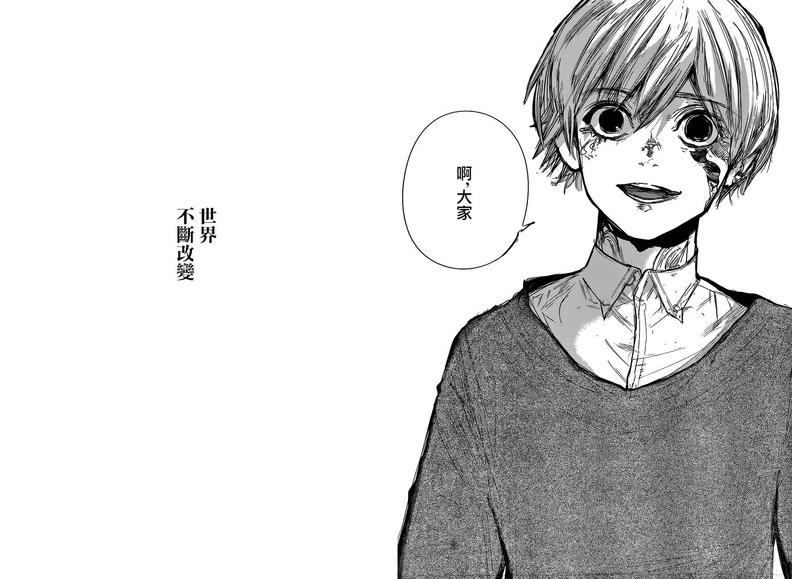

# 东京喰种的结局如何评价
作者：研山山
原答案
今早看完了 179 的汉化，自答一波。
以下内容仅代表个人主观臆测，望有不同意见的朋友在评论区友善交流，勿喷。
《东京喰种》没有意外的话应该不会有下一部续作了，所以很可惜，根据它最后几章大结局的故事发展水平，我只能遗憾地接受这部作品沦为烂尾作的事实。
在 179 情报发出之后，正式汉化推出之前，整个贴吧都沦陷在一片对结局的失望，对作者西瓜的不满情绪当中，但也不乏乐见这个大团圆结局的人在。在对《东京喰种》一系列缺点不足数落之余，我心里突然有了一个想法：
**《东京喰种》是我看过的少有的，作品基调和主角情感塑造随着作者自身心态的改变而改变的漫画。** 上一次看到与之相似的受作者自身心态所影响的作品，还是痞子的《EVA》，不过和喰种的转变方向完全相反就是了。
从《东京喰种》无印篇到 re 前半部分，我们可以看到作者西瓜在很用心地写这个故事，也放入了很多自己想表达的东西在里面。所以在这个阶段的《喰种》里，我们可以看到很多完成度很高的篇章，里面的戏剧矛盾描写得激烈而又恰到好处，一票角色塑造的立体程度令人动容。而这些也正是当时的《东京喰种》能吸引到我们的地方，当时谁不是因为凉子小姐的死，金木被虐后的黑化，以及基佬山的变态（x）而入的坑？一直到最后，被 20 区驱逐战卷起的一个个悲剧漩涡，将读者陷入到东京喰种那独特的感染力和共情性当中，这也正是我们喜欢和支持这部作品的源动力所在。
re 前半部分的两个大章 —— 拍卖会篇和月山家驱逐篇，是我个人很喜欢的两个故事。那时我真切感受到了什么叫 “心平气和地讲故事”。是的，在这两个故事的最终冲突打响前的几十话里，西瓜居然都在不紧不慢地描写着具体搜查过程，线索的突破和断开，CCG 的会议讨论等等很容易拉慢故事节奏的内容，你很难在这部分看到太多激烈的剧情冲突，它的细腻温和程度甚至能让你忘记它曾是一部画面里充斥着血浆与肢体的奇幻打斗漫，现在反倒更像是一部描写都市职场的普通青年漫。更难得的是，西瓜把这些细小的点全都有效利用了起来，让它们为最终故事的发展服务。
如果没有之前神父与佐佐木对 Torso 猎食喜好与出没地点的推测，以及一次次对受害人亲友的探访，就发现不了 Torso 与青铜的动向，更遇不到大蛇；没有 Qs 女装潜入夜店的行动，也就发现不了拍卖会的存在；没有习因金木之死陷入癫狂而产生的进食混乱，也就不会有月山佣人外出捕食不慎被抓的情节；没有木岛故意放出的对悠马的拷问视频，也就不会使得爱慕悠马的女仆为拯救悠马去寻找目击证据，结果落入陷阱被捕，最终暴露月山家内幕；Qs 没有被叶雇佣的青铜打手袭击，也就没办法发现月山家和青铜树勾结的线索，再加上 Qs 面具行动的实施，获得了叶与青铜树利益往来的铁证，让 CCG 之后歼灭月山家的行动有了更充足的理由。
这些一个个平淡细小的点，被西瓜用心地串联起来，一步步地将其运用起来推动故事的发展。不依靠刻意设置的打斗冲突，也不依靠突兀牵强的故事转机，就拿手上可用的既有线索，有条不紊地引爆了故事最终的矛盾，这较为缓慢的故事节奏也正好成为了西瓜塑造人物的优良土壤，我们也正是在这一阶段里看到一系列讨喜的 CCG 和喰种角色在西瓜的笔下接连诞生。我当时真的被那一时期西瓜所透露出来的耐性与平和所打动，再加上那时候漫画颇为细腻美型的画风，使得这个阶段的东京喰种，成为我真正粉上西瓜这个作者的最大原因。
这一阶段的剧情虽然较为缓和欢快，但其中还是穿插着很多较为黑暗残酷的故事情节，仿佛在不时提醒着我们，对人性的冷峻挖掘，依然是这部漫画的基础核心所在。
这个时期的西瓜，热情与野心尚在。
而在之后发生了什么呢？月山篇结束后不久，紧接到金木有马决战篇章，这时候的喰种真人版电影启动，漫画的发售量在这个时期也一路高涨，在日本国内乃至国际上的成绩可以说相当好看，舞台剧，改编游戏也开始相继推出，西瓜也举办了个人画展，这个时期的喰种，在商业化上的热度达到了一个巅峰。而在这些与漫画创作无关的商业活动中，我们都不难看到西瓜投入了不少的精力在其中。电影版拍摄期间，西瓜亲自挑选了男女主演员，电影结束之后，他认真地为每个主要演员画了一幅画像；PSV 上的喰种游戏，西瓜更是亲笔操刀贡献了十万余字的游戏脚本；喰种第三季 TV 化后，西瓜在每一集开播时都画了贺图；而那次针对他自己个人的画展，如果说西瓜完全没有参与我是不信的。
到这里为止，我想说的不是西瓜因为这些商业活动浪费了太多精力，最终导致漫画作品质量下降，不是的，西瓜实际上是个相当敬业的漫画家和画手，细数西瓜这七年以来的连载情况，除去日本每年惯例的节假日以及无印篇与 re 篇中间的间隔期，你会发现西瓜的休刊次数几乎为零。虽然喰种的连载时间比不上那些超长篇漫画，但七年的时间也不算短了，七年里几乎没有休过刊，在为各种商业活动忙碌的同时还依然保持着高强度的漫画周更，已经相当相当难得了。如果关注一下西瓜的网络社交账号，你会发现西瓜在网上更新画作的频率相当夸张，对于这样的情况，我只能理解为西瓜是一个真正喜欢「画画」，对「画画」这项职业无比敬重的人，它之所以对这些活动那么上心，献上的画作一幅又一幅，甚至在连载之余花费大量时间为一个改编游戏书写十万余字的游戏脚本，我觉得更像是一种小孩子得到别人认可后，纯粹且难以掩饰的欣喜和骄傲。他是真的喜欢也真的很感谢这些愿意参与到他的作品改编，活动策划推广中的每个人。所以我们看到无论动画第二季的改编有多么糟糕，他还是愿意为动画的 ED 创作插画，第三季播出之时，依然开开心心地为每集奉上贺图。他不在乎别人做的怎么样，只要有人愿意为他的作品做点什么，他就很开心，他就很感谢。
我想说的是，《东京喰种》这部漫画的成功程度已远远超过了西瓜最初的预想。西瓜可能在无印篇 TV 化的时候就发现了自己漫画在人气上做出了成绩，但是并没觉得最终会好到什么程度，毕竟日本每年动画化的作品那么多凭什么自己会成为突出的那一个。而到了喰种电影版启动和喰种漫画销量一路飙升的时候，西瓜才真正意识到，卧槽老子居然是在画这么火的一部漫画？
石田スイ以前是什么人？他的出道作是一部叫《Penisman》的不入流的网络猎奇漫，他正式连载后选了喰种这一主题绝不是偶然，也不是为了刻意迎合什么才选择的，而是因为他就是喜欢这一类型的黑深残题材。在喰种漫画一开始一直到后面的故事里，我们都能感受到这部作品不断散发着的压抑，黑暗，暴虐的基调，换句话说，西瓜当时想画的是一个真正没有任何希望的悲剧。此时的西瓜，就和他笔下的金木一样，是一个读过很多复杂晦涩的文学作品（看漫画里西瓜不断引用的各类文学作品段落就知道），性格内敛含蓄，内心满满积攒着诸多难以发泄的负面情感，渴望被爱，渴望获得社会认同，渴望将心中的黑暗情绪，将自己的独特认知和新奇思想表达出来的文艺青年。我所说的，一开始的西瓜有野心，是指西瓜有创作表达上的野心，而不是有让作品成功的野心。我们从喰种里不难看出，西瓜就像一个看了很多书，心里充满了各种迫切想要说给别人听的想法，表达欲望极为强烈的，颇有才华的青年，他通过嘉纳之口讲了自己对医学发展的看法，通过泉姐与旧多的谈判讲了自己对政治的见解，通过一闪而过的大环 ACT 的理念表达了万物对自己物种出身的偶然性与不可选择性才是造成物种间不平等的重要原因，通过故事里金木，有马，泉，月山，利世等一干喜欢读书的角色毫不吝啬地抒发自己对文学作品的热爱之情，当更多的，他心里想表达，想宣泄出来的东西太多太浓稠了，以至于浓稠到有些东西他甚至没办法准确清晰地将它们化成一条明确的主线表达出来让读者理解，各种过于意识流的描写经常让读者感到不知所云 —— 或者连他自己也不能完全理解。但他就是想表达，表达才是能让这个心中积攒着各种情绪的文艺青年感到安定的唯一方式。
而之后喰种这部作品的成功程度是他始料未及的。喰种的成功为这个文艺青年带来的除了物质水平上的急剧提高，更多的是一种自身的被认同感，以及这个曾经他所不爱的，让他感到绝望的世界带来的前所未有的温情与安定，甚至他可能还和金木遇到董香一样，在他的生活里也出现了一个被他吸引而来的爱着他的伴侣。此时的西瓜，心境上开始改变，他不再怨恨这个世界，不再质疑，不再宣泄，亦不再挣扎。所以我们可以看到喰种的最后几章，这些之前不断在血海中斗争，肆意破坏着残酷世界的狠角色，面目心境都变得柔和得不像话。比如最后认为世界没有错的金木，死前为亚门笑着流泪的神父，与四方重归于好的呗，开始反思人生的泷泽，因为母亲的逝去而开始研究可再生医疗的嘉纳，以及只想过普通人生活的旧多。这些之前被黑暗笼罩着的角色开始释怀，实际上就是作者在与过去的自己进行决裂，而他之前对于创作和表达的野心，可能早就慢慢被某种温柔给磨平了。而对于作品成功的欲望，西瓜可能一开始就是没有的，所以当他与这个世界达成和解的时候，当他觉得他不再需要通过东京喰种表达什么的时候，他也就觉得这部作品的对他的意义到此为止了。
所以他也就觉得，已经七年了，足够了。
而我们却觉得，这都七年了，可惜了。
